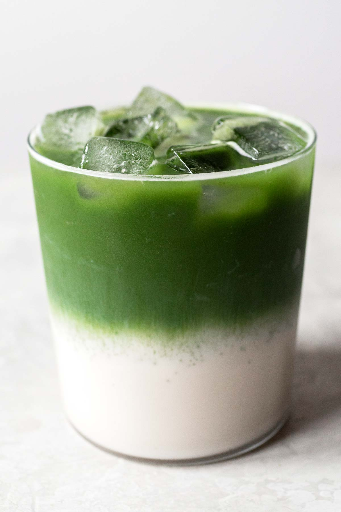

Iced Matcha Latte

This matcha latte is perfect for those hot mornings where you need a punch of caffeine with the added bonus of being high in antioxidants. Easy to make and highly customizable to your liking.
Ingredients:
- 1-2 tsp Matcha Powder
- 1/2 cup milk of choice
- 1/2 cup of ice
- sweetener of choce (to taste)
- 1/4 cup water
Instructions:
- Mix milk and sweetener with a whisk.
- Fill glass with ice.
- heat water to 80 degrees celcius. Scoop matcha powder into a mug and add hot water. Whisk until no longer clumpy.
- Pour sweetened milk into glass with ice.
- Pour whisked matcha slowly onto glass to create layered effect.
- Enjoy!